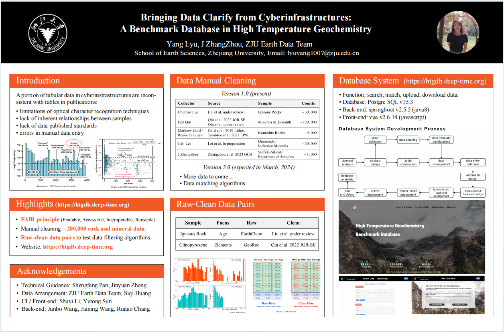

Junbo Wang

Master Student
University of Tennessee, Knoxville
Home Page
Contact
Email: jwang206@tennessee.edu
825 Volunteer Blvd, Knoxville, TN 37916
Projects
I am leading a generative AI model project, focusing on generating specific place-related audios and images. We recollected place-related audio-image paired datasets inspired by SoundingEarth. Additionally, we designed a new model to enhance generative performance, aiming to advance the capabilities of generative AI in geospatial perception, particularly in visual and auditory aspects.
In addition, I am conducting a research project, integrating Convolutional Neural Networks (CNNs), aerosol data, and traffic accident records to quantify the impact of extreme weather conditions on traffic safety. By employing advanced analytical techniques, this study aims to uncover critical insights into how atmospheric changes influence road safety and accident rates.
Moreover, I conduct research on addressing sampling bias issues in paleontological datasets, focusing on the survival periods of Cretaceous dinosaurs and the statistical analysis of species diversity.
I am also actively involved in the Deep-time Digital Earth (DDE), an IUGS-recognized international big science program. My work with DDE includes developing open-sourced highly automated machine learning Python framework-Geochemistry π and High Temperature Geochemistry Benchmark DataBase-HTG Database.
Geochemistry π
I am actively involved in the product group of Geochemistry π. Geochemistry is a convenient, one-stop machine learning tool for geochemists who prefer not to code. I have contributed to the network analysis functionality and am currently investigating and designing a new LLM Agent for Geochemistry π.
HTG Database
I work as a backend developer and research assistant for the HTG Database, focusing on developing data search and user reporting functionalities using the Spring Boot framework. I am also contributing to the evaluation and comparative experiments of FAIR principles.
